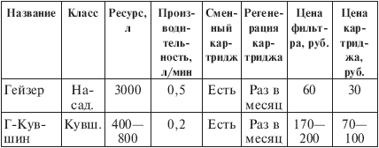
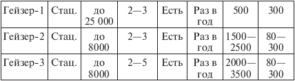
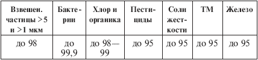
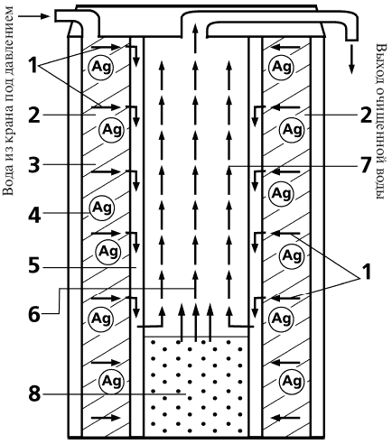

Бытовые фильтры. для очистки воды «Гейзер» .

Российская компания «Гейзер» (Санкт-Петербург), одна из крупнейших наряду с «Аквафором» и «Барьером», была создана в конце 80-х годов специалистами Радиевого института им. В.Г. Хлопина. В настоящее время компанией разработана серия фильтров, включающая насадку, кувшинный и стационарный водоочистители нескольких моделей. Продукция «Гейзера» поставляется во многие регионы России, а также в Казахстан и Белоруссию; начата поставка фильтров в Индию. В Петербурге фирма открыла пять специализированных магазинов.
Если «изюминкой» фильтров «Аквафора» является сорбент аквален, то в «Гейзере» применяется свое ноу-хау – особый ионообменный фильтрующий материал. Это катионный ионит, обменивающий ионы тяжелых металлов на ионы натрия Na. Кроме того, это пористый материал, причем размеры пор могут быть сделаны очень малыми (до 0,01—0,1 мкм), средними (0,1–1 мкм) и сравнительно большими (5—20 мкм). Разработанный «Гейзером» ионит сочетает в себе свойства ионообменного материала (главное качество), а также сорбента и механического фильтрующего вещества (в меньшей степени). Величина поверхности на грамм массы у него меньше, чем у активированных углей (а значит, меньше сорбционная способность), но тем не менее он обладает сорбирующим свойством. Ионит с самым малым размером пор не применяется на практике, поскольку такое очень мелкое «сито» будет быстро забиваться примесями (на базе этого материала специалисты «Гейзера» разрабатывают фильтр с обратным осмосом). Реально используются иониты со средним и крупным размером пор, которые удаляют тяжелые металлы за счет ионного обмена и сорбируют микрофлору и органические загрязнения. Любопытные превращения происходят со свободным хлором при просачивании через рассматриваемый ионит: в массиве материала пузырьки газа, переносимые водой, сильно сжимаются, а на выходе резко расширяются и за счет этого улетучиваются с поверхности воды. Это дает производителям основание утверждать, что по очистке от свободного хлора ресурс ионита практически неограничен. Для борьбы с микрофлорой в материал ионита вводятся соединения серебра.
Фильтр, изготовленный из разработанного «Гейзером» ионита, можно регенерировать. Для этого достаточно прокипятить картридж несколько минут в кислоте (рекомендуется лимонная) либо замочить в кислоте на ночь, а затем промыть раствором соды. Такая процедура намного увеличивает срок службы фильтра. Кроме того, компания «Гейзер» заменяет отработанные картриджи на восстановленные в заводских условиях. Картридж в любой момент можно вытащить из патрона фильтра, осмотреть и выяснить, насколько он загрязнен. Свидетельством выработки ресурса является признак, уже упомянутый при рассмотрении фильтров «Аквафора»: чем сильнее забит картридж, тем медленнее выходит очищенная вода, пока, наконец, она не начинает сочиться из всех соединений патрона.
Компания «Гейзер» производит три типа бытовых фильтров: насадку на кран, кувшинный и стационарный фильтры (табл. 5.6 и 5.7). Основной ионитный модуль «Гейзер-1» доукомплектовывается блоком из активированного угля, а также отдельными патронами-модулями для механической и сорбционной очистки, в результате чего формируются двух– и трехуровневые системы «Гейзер-2» и «Гейзер-3». В зависимости от использования тех или иных модулей и комплектации поставки кранами стационарные фильтры «Гейзера» делятся по номенклатуре следующим образом: для городского водопровода – «Гейзер-3И „элит“, „Гейзер-3ИВ“, „Гейзер-2И“, „Гейзер-2ИВ“, „Гейзер-2ИП“, „Гейзер-2ИПУВ“, Гейзер-1И», «Гейзер-1ИВ»; для воды с повышенным содержанием железа – «Гейзер-3ИА „элит“, „Гейзер-3ИАУВ“; для жесткой воды – „Гейзер-1С“, „Гейзер-1ИУВС“, „Гейзер-2ИБС“, „Гейзер-2ИВС“, „Гейзер-3ИБС „элит“, „Гейзер-3ИВС“. Кроме бытовых фильтров, компания производит засыпные фильтры для умягчения и обезжелезнения воды („Гейзер-Фрегат“, „Гейзер-Чайка“) и магистральные фильтры для холодной и горячей воды производительностью от 0,4 до 12 м^3/ч („Гейзер-4“, „Гейзер-2л“, „Гейзер-3л“, „Гейзер-12“, „Гейзер-16“, «Гейзер-32“).
Комментарии.
Мой опыт работы с фильтрами «Гейзер» слишком небольшой, но могу привести два независимых мнения специалистов.
1. Н.В. Боровков, сотрудник Госсанэпиднадзора. Мнение положительное: считает, что данные фильтры надежно очищают воду от всех возможных видов загрязнений (как, впрочем, и фильтры «Аквафора»).
2. Мнение торгующей организации, которая, не отрицая достоинств фильтров «Гейзер», не торгует ими, так как считает, что ионообменный фильтр довольно быстро выходит из строя и требует регенерации. Способ же регенерации (кипячение в кислоте и промывка соляным раствором) неудобен.
С последним замечанием я не согласен. Я раз в месяц промываю кислотой свой электрохимический фильтр «Изумруд», что занимает не несколько минут, а целый час. Прокипятить картридж гораздо проще.
Таблица 5.6. Фильтры компании «Гейзер»


Примечания.
1. Система «Гейзер-2» комплектуется дополнительным модулем механической очистки, а «Гейзер-3» – модулями механической и сорбционной очистки на основе активированного угля. Качество очистки при этом выше, чем у «Гейзера-1», но ресурс в таком случае определяется не основным ионитным модулем, а модулями механическим (5000—10 000 л, регенерация раз в 6 месяцев) и угольным (8000—10 000 л, регенерация раз в год).
2. Указаны цены, действующие в фирменных магазинах компании «Гейзер». Разброс цен на системы «Гейзер-2» и «Гейзер-3» зависит от их комплектации и типа картриджа: угольный стоит 80 руб., ионитный – 300 руб. (при замене отработанного на регенерированный – 200 руб.).
Таблица 5.7. Эффективность очистки воды, %

Примечание. Ионообменный картридж для мягкой воды соли кальция и магния не удаляет. Ионообменный картридж для жесткой воды удаляет избыток кальция и железа, после чего необходимо произвести его регенерацию.
«Гейзер-1» является базовым модулем, поэтому стоит рассмотреть его конструкцию подробнее (рис. 9).

Рис. 9. Разрез фильтра «Гейзер-1»
Ионитный материал выполнен в виде пустотелого цилиндра с толстыми стенками, который помещается в патрон – наружный корпус фильтра. На самом дне патрона размещается минерализатор, а над ним – цилиндр из активированного угля, который вдвигается в цилиндр ионита. Вода из крана стекает по внутренней стороне патрона и продавливается сквозь стенки ионитного цилиндра в радиальном направлении 1, причем взвеси размером 1 мкм и более извлекаются в поверхностном слое 2. Далее вода проходит через ионитный материал 3 с внедренным в него соединением серебра 4, освобождаясь от основных химических загрязнений – тяжелых металлов и вредной органики; при этом жизнедеятельность микроорганизмов подавляется ионами серебра. Миновав ионит, вода стекает вниз в зазоре 5 между внешним и внутренним цилиндрами, попадает в угольный цилиндр 6 и поднимается в нем вверх 7, проходя угольный фильтр в осевом направлении и доочищаясь от органики и хлора. Сквозь пористую крышку минерализатора 8 в воду просачиваются полезные минеральные вещества, и эта дополнительная минерализация составляет до 80 мг/л. Внутрь основного ионитного цилиндра можно вставлять, кроме угольного, и другие картриджи, например умягчитель воды, снимающий ее излишнюю жесткость.